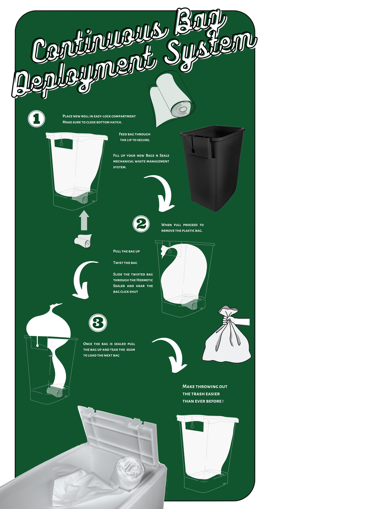

Pull
Draw the active liner from the integrated continuous roll.
 Precision detail / Easy-Lock™
Precision detail / Easy-Lock™02 / How it works
The replacement supply lives inside the system. Seal the filled liner, remove it and draw the next one forward.
View original guideDraw the active liner from the integrated continuous roll.
Gather and guide the filled liner through the tape-sealing slot.
Separate the sealed bag. The next liner is already in position.

Setup guide Open →